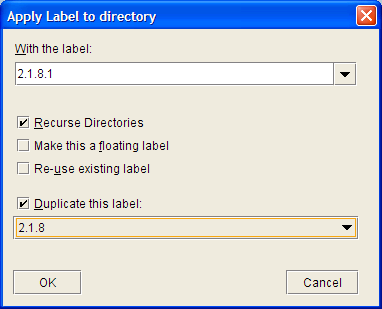

|
LabelsWorking with QVCS labels is among the most important things to understand in order to get the most out of QVCS-Enterprise. If you are not using labels, then please read on to see why they are an important addition to your toolkit. What is a label? Strictly speaking, (as noted in the glossary), a label is just a string that you associate with a specific revision within an archive file. However, since you can associate that same label string with revisions in more than one file, a label becomes a way for you to create a set (in the mathematical sense) of file revisions that are all associated with that same label string. QVCS-Enterprise supports two different kinds of labels:
Static LabelsStatic labels are always associated with a specific revision within an archive file. Static labels are typically used to identify the set of revisions that compose a specific product release. For example, when we produce a product release of QVCS-Enterprise, we apply a static label to all the files that are part of that release. Later, if/when we need to answer questions about that release, we can use the static label to identify what the source code looked like for that specific release. Or, we can use that static label as a starting point if we need to produce a product release that fixes a bug that has been found in that release. Floating LabelsFloating labels are always associated with the tip revision on the file branch that they are associated with. For example, if you apply a floating label to the TRUNK, then that floating label will always 'point' to the tip revision on the TRUNK. If you apply a floating label to a branch, then that floating label will always 'point' to the tip revision of that branch. Floating labels are typically used to define a set (in the mathematical sense) of files, as opposed to a set of revisions. Duplicating LabelsSuppose you have a static label that you used to define the set of revisions that compose a release. You release your product, and some of your customers discover a bug in that release. Meanwhile, you have already started work on the next release, and have checked in a number of changes that have nothing at all to do with changes that you will need to make in order to fix the reported bug. You want to be able to create a bug-fix release that has just the changes needed to fix the bug. What to do? The very first thing to do is to duplicate the original static label. For example, if the original label was 2.1.8, you could duplicate that label, using a new label string of 2.1.8.1.  After duplicating the label, you can checkout the revisions that need to change by checking out 'by label', (using the 2.1.8.1 label). When you check your changes back in, apply the 2.1.8.1 label at checkin. You can then do a build, using the 2.1.8.1 label to fetch all the revisions that compose the new bug-fix release. Your new 2.1.8.1 release will be identical to your 2.1.8 build except for the changes you made to fix the bug(s). When you duplicate a label, (whether duplicating a static label, or floating label), the new label, by default, is a static label. If you want the new label to be a floating label, you need to enable the 'Make this a floating label' checkbox. Other Label Tips
|
| © Copyright 2004-2010 Quma Software, Inc. All Rights Reserved. |